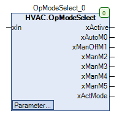

OpModeSelect (FB)¶
FUNCTION_BLOCK OpModeSelect EXTENDS MANASBase IMPLEMENTS IMan
Short Description¶
Operating mode selector for switching between a maximum of 6 operating modes (automatic and 5 manual operating modes)
Portrayal¶

Interfaces¶
Inputs¶
Name Datatype
Range
Init-Value
Function
xIn BOOL FALSE State variable for xActive in automatic mode
Outputs¶
Name Datatype
Range
Init-Value
Function
xActive BOOL FALSE Output variable in automatic mode
xAutoM0 BOOL FALSE Operating mode display in automatic mode
xManOffM1 BOOL FALSE Operating mode display in manual off mode
xManM2 BOOL FALSE Operating mode display in manual mode 1
xManM3 BOOL FALSE Operating mode display in manual mode 2
xManM4 BOOL FALSE Operating mode display in manual mode 3
xManM5 BOOL FALSE Operating mode display in manual mode 4
xActMode STRING Name of the current operating mode (e.g. ‘Automatic’)
Setpoints / Parameters¶
Name Datatype
Range
Init-Value
Function
tToggleTime TIME 2s Time delay for switching the operating mode
eMaxMode eOpMode eOpMode.Mode5 Maximum number of manual operating modes
xOpModeToggle BOOL FALSE Switch operating mode
xResAuto BOOL FALSE Reset to automatic mode
xEn BOOL TRUE Enable
sTitle STRING ‘Betriebsmodus ‘ Name of the operating mode (OP) selector
sTitle2 STRING ‘Beschreibung ‘ Description of the OP selector
eMode eOpMode eOpMode.Mode0 Current state of the OP mode selector
sTitleM0 STRING ‘Automatik’ Description of the automatic mode
sTitleM1 STRING ‘Hand Aus’ Description of the manual off mode
sTitleM2 STRING ‘Hand 1’ Description of the manual mode 1
sTitleM3 STRING ‘Hand 2’ Description of the manual mode 2
sTitleM4 STRING ‘Hand 3’ Description of the manual mode 3
sTitleM5 STRING ‘Hand 4’ Description of the manual mode 4
Functional Description¶
General¶
Variable xIn.¶
In xActive Note
FALSE FALSE Nur im Automatikbetrieb ( eMode = eOpMode.Mode0 ) gültig TRUE TRUE Nur im Automatikbetrieb ( eMode = eOpMode.Mode0 ) gültig
Output variable xActive¶
Reset to automatic mode¶
Enabling/disabling switching¶
Switching delay tToggleTime¶
Operating modes¶
eMode Name of the operating mode
xIn xActive xAutoM0 xManOffM1 xManM2 xManM3 xManM4 xManM5 Note
eOpMode.Mode0 sTitleM0 FALSE FALSE TRUE FALSE FALSE FALSE FALSE FALSE Operating mode automatic
eOpMode.Mode0 sTitleM0 TRUE TRUE TRUE FALSE FALSE FALSE FALSE FALSE Operating mode automatic
eOpMode.Mode1 sTitleM1 X FALSE FALSE TRUE FALSE FALSE FALSE FALSE Operating mode manual-off
eOpMode.Mode2 sTitleM2 X FALSE FALSE FALSE TRUE FALSE FALSE FALSE Operating mode manual 1
eOpMode.Mode3 sTitleM3 X FALSE FALSE FALSE FALSE TRUE FALSE FALSE Operating mode manual 2
eOpMode.Mode4 sTitleM4 X FALSE FALSE FALSE FALSE FALSE TRUE FALSE Operating mode manual 3
eOpMode.Mode5 sTitleM5 X FALSE FALSE FALSE FALSE FALSE FALSE TRUE Operating mode manual 4
Visualization¶
Information¶
Element Authors
Date
Version Note
Function
Adam Bartod 11.2016 1.0 Initial Version
Programming
Adam Bartod 02.2017 1.0 Initial Version
Test Jochen Reu 02.2017 1.0 Initial Version
Documentation
Jochen Reu 10.2017 1.0 Initial Version
Codesys¶
- InOut:
Scope Name Type Initial Comment Input xIn BOOL 0 State variable for xActive in automatic mode
tToggleTime TIME TIME#2s0ms Time delay for switching the operating mode
eMaxMode eOpMode eOpMode.Mode5 Maximum number of manual operating modes
xOpModeToggle BOOL FALSE Switch operating mode
xResAuto BOOL FALSE Reset to automatic mode
xEn BOOL TRUE Enable
sTitle STRING ‘Betriebsmodus’ Name of the operating mode (OP) selector
sTitle2 STRING ‘Beschreibung’ Description of the OP selector
eMode eOpMode eOpMode.Mode0 Current state of the OP mode selector
sTitleM0 STRING ‘Automatik’ Description of the automatic mode
sTitleM1 STRING ‘Hand Aus’ Description of the manual off mode
sTitleM2 STRING ‘Hand 1’ Description of the manual mode 1
sTitleM3 STRING ‘Hand 2’ Description of the manual mode 2
sTitleM4 STRING ‘Hand 3’ Description of the manual mode 3
sTitleM5 STRING ‘Hand 4’ Description of the manual mode 4
Output xActive BOOL Output variable in automatic mode
xAutoM0 BOOL Operating mode display in automatic mode
xManOffM1 BOOL Operating mode display in manual off mode
xManM2 BOOL Operating mode display in manual mode 1
xManM3 BOOL Operating mode display in manual mode 2
xManM4 BOOL Operating mode display in manual mode 3
xManM5 BOOL Operating mode display in manual mode 4
xActMode STRING Name of the current operating mode (e.g. ‘Automatic’)